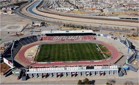
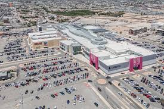

RECREACION
Parques y Áreas Naturales
- Parque Central "Hermanos Escobar" – Un parque con lagos, áreas verdes, juegos infantiles y actividades al aire libre.
- Parque Chamizal – Ideal para hacer ejercicio, pasear en bicicleta o disfrutar de un picnic en familia.
- Dunas de Samalayuca – Ubicadas a las afueras de la ciudad, son perfectas para practicar sandboarding, senderismo o paseos en cuatrimoto.

🎡 Entretenimiento Familiar
- Plaza de la Mexicanidad (La "X") – Espacio con eventos culturales, ferias y exposiciones.
- El Museo Interactivo La Rodadora – Un lugar ideal para niños y adultos con exhibiciones científicas y culturales.
- Acuática NelsonVargas y Parque Extremo – Para quienes buscan diversión con albercas o deportes extremos.

🎬 Cultura y Arte
- Centro Cultural Paso del Norte – Presentaciones de teatro, danza y conciertos.
- Museo de la Revolución en la Frontera (MUREF) – Muestra la historia de Juárez y su importancia en la Revolución Mexicana.
- Teatro Víctor Hugo Rascón Banda – Espacio para eventos artísticos y culturales.

⚽ Deportes y Recreación Activa
- Estadio Olímpico Benito Juárez – Sede de eventos deportivos, incluyendo los partidos del equipo FC Juárez (Los Bravos).
- Campos de béisbol y centros deportivos – Hay muchas opciones para practicar béisbol, softbol y otros deportes.
- Ciclopista y Skateparks – Existen rutas para ciclistas y espacios para patinadores.

🛍️ Centros Comerciales y Vida Nocturna
- Plaza Las Misiones y Galerías Tec – Centros comerciales con tiendas, restaurantes y cines.
- Avenida Tomás Fernández y Pronaf – Zona con bares, restaurantes y antros para disfrutar la vida nocturna.
